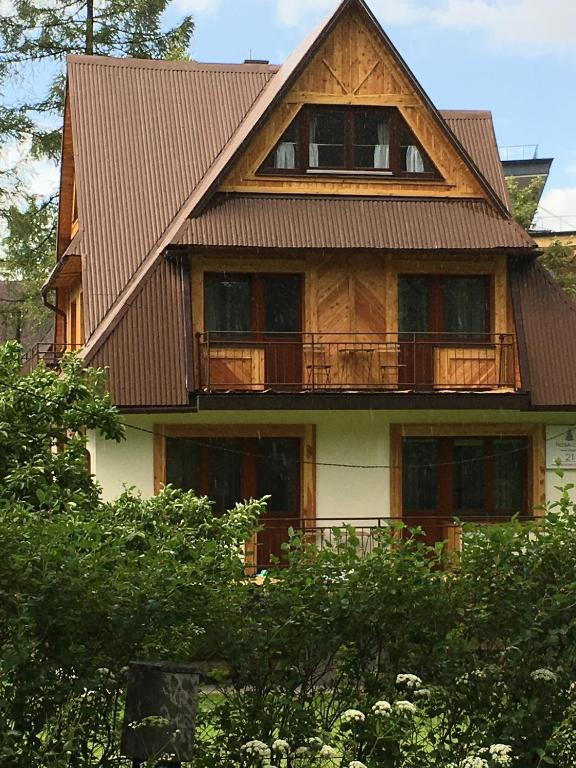
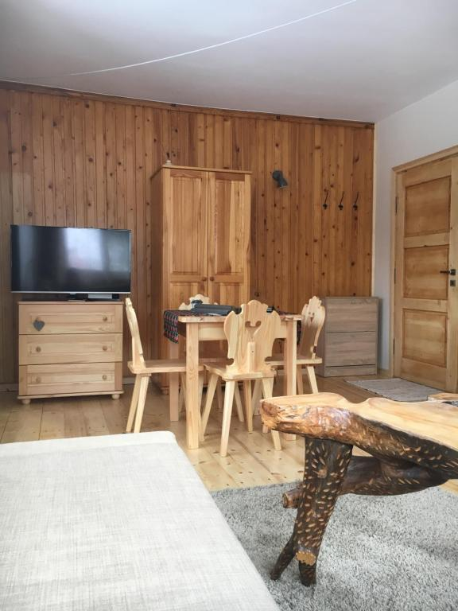
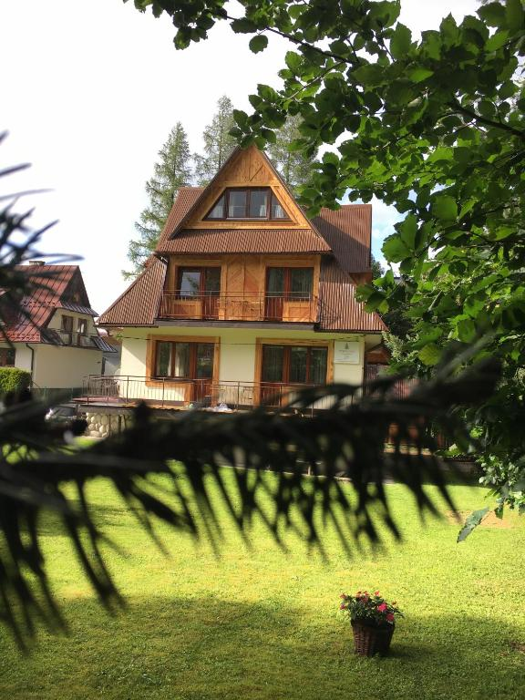
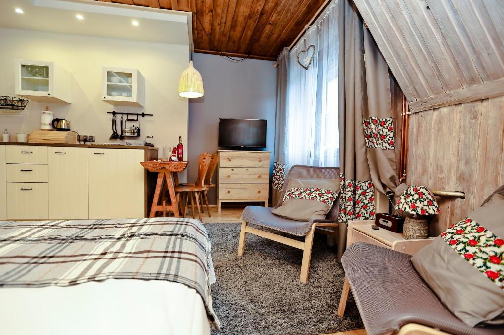
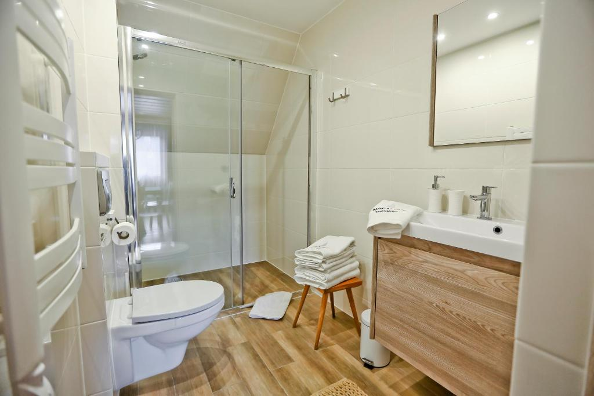
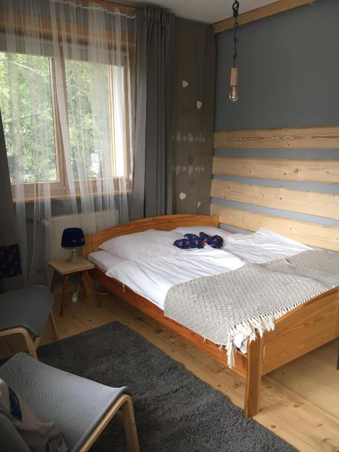

Okna, przy których chce się zwolnić
Zamiast patrzeć na kolejny pensjonat za płotem, łapiesz tu kawałek nieba, dachy Zakopanego i gór, które naprawdę wchodzą w kadr.
Na pierwszym planie
Zamiast obiecywać wszystko naraz, ten dom wygrywa prostymi rzeczami: dobrym adresem, sensownie urządzonymi apartamentami i atmosferą, w której łatwo złapać oddech po mieście, szlaku albo stoku.
Zamiast patrzeć na kolejny pensjonat za płotem, łapiesz tu kawałek nieba, dachy Zakopanego i gór, które naprawdę wchodzą w kadr.
Ogród nie jest tu dekoracją pod zdjęcie. W cieplejsze miesiące daje trochę luzu rodzinom, a po prostu sprawia, że po przyjeździe nie ląduje się od razu w ciasnym podwórku.
Jeśli jedziesz pod narty, trudno o bardziej oczywisty punkt startowy. Nosal jest praktycznie obok, a zimowy plan dnia układa się bez kombinowania z autem i objazdami.
Jest wszystko, co potrzebne do prostego śniadania, podgrzania zupy po szlaku albo spokojnego wieczoru bez wychodzenia znowu do miasta.
To dobre miejsce dla tych, którzy nie chcą za każdym razem organizować opieki dla psa przed wyjazdem. Warto tylko uprzedzić o tym przed przyjazdem, bo mogą pojawic się dodatkowe opłaty.
Prywatna łazienka, Wi-Fi w pokojach i parking na miejscu nie są tu dodatkiem z gwiazdką, tylko normalną częścią pobytu.
Historia miejsca
NOSALOVE - Sabina Wicher i Adam Wicher. To rodzinny dom, od lat związany z gośćmi wracającymi pod ten adres przy kolejnych pobytach.
Zachowano charakter podhalańskiego domu, a przy okazji zadbano o wygodniejszy standard dla dzisiejszych gości.
Wiele gości docenia spokojną atmosferę, wygodne łóżka i życzliwy kontakt z gospodarzami.


Aktualności
Znajdziesz tu pomysły na spacery, jedzenie, termy i spokojniejsze zwiedzanie Zakopanego bez biegania po wszystkich atrakcjach naraz.
O lekkim starcie dnia, kiedy z Drogi Oswalda Balzera wychodzi się na spacer bez korków, bez szukania parkingu i bez konieczności rozpoczynania dnia w środku miasta.
Termy, sztuka, dobra kawa i spokojny wieczór w apartamencie zamiast chaotycznego szukania czegokolwiek, byle tylko nie przemoknąć.
Kilka kierunków na dobre jedzenie bez przypadkowych lokali pod turystyczny ruch i z pomysłem na spokojny wieczór po górach.
Dwa dni pod Tatrami rozpisane tak, by zostało miejsce na spacer, dobrą kolację, sen i zwykłe przyjemności, a nie tylko zaliczanie punktów.
Konkretne wskazówki, które termy wybierać po wyjściu w Tatry i o jakiej porze jechać, żeby uniknąć największego tłoku.
O swobodzie dnia, aneksie kuchennym, większej przestrzeni i tym, dlaczego dobrze urządzony apartament daje więcej niż standardowy pokój.
Podstrony zamiast landingu
Zamiast jednego długiego opisu łatwiej przejść tam, gdzie akurat potrzebujesz konkretu: do układów apartamentów, lokalizacji, opinii, galerii albo praktycznych odpowiedzi.
Układy pomieszczeń, różnice między wariantami i to, jak te apartamenty sprawdzają się w praktyce przy różnych wyjazdach.
Adres rozpisany po ludzku: co jest obok, gdzie dojdziesz pieszo i dlaczego to miejsce pasuje i na narty, i na spokojniejszy pobyt.
Cytaty gości oraz praktyczne odpowiedzi, gdy chcesz sprawdzić, jak ten pobyt wygląda poza ładnymi zdjęciami.
Zebranie tych wszystkich drobnych rzeczy, które na miejscu robią różnicę: kuchnia, łazienka, parking, balkon, taras i pobyt z psem.
Strona dla tych, którzy chcą wiedzieć, czy pod narty faktycznie będzie wygodnie, a nie tylko "blisko stoku" w opisie.
Telefon, mapa, formularz i wszystko to, co zwykle chce się sprawdzić dopiero wtedy, gdy wyjazd staje się już konkretnym planem.
Galeria
Są tu kadry z zewnątrz, z pokoi i z łazienek, więc łatwo wyobrazić sobie skalę domu, materiały i to, jak naturalnie drewno pracuje we wnętrzach.




Najczęstsze pytania
Zamiast odsyłać od razu na kolejną podstronę, zbieramy tutaj pytania, które najczęściej wracają przed decyzją o pobycie.
Prywatny parking jest na posesji i nie wymaga osobnej rezerwacji, więc przyjazd autem nie komplikuje pierwszego dnia.
Tak, ale pobyt pupila warto zgłosić od razu. To najprostszy sposób, żeby wszystkie warunki ustalić jeszcze przed przyjazdem.
Nosal jest praktycznie obok, dlatego zimowy poranek nie zaczyna się tu od dojazdu przez całe Zakopane.
Placeholder techniczny: po otrzymaniu właściwego adresu podepniemy tu bezpośredni link do rezerwacji Hotres.